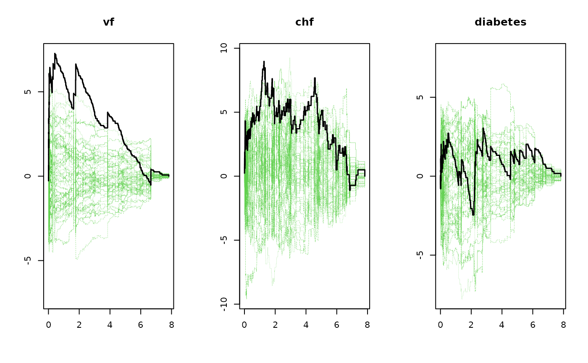

Performs cumulative score process residual tests for the proportional hazards (PH) assumption in Cox regression. The test statistics are based on the cumulative score process: $$ U(t) = \int_0^t (X_i - E(t) ) d \hat M_i(s) $$ where \(\hat M_i(s)\) are the martingale residuals.
Usage
# S3 method for class 'phreg'
gof(object, n.sim = 1000, silent = 1, robust = NULL, ...)Arguments
- object
A fitted
phregobject (frommetsorsurvival).- n.sim
Number of simulations for the resampling procedure (default 1000).
- silent
Logical; if TRUE, suppresses timing estimates for long jobs.
- robust
Logical; if TRUE, uses robust martingale-based simulations. If NULL, defaults to TRUE if a cluster term is detected in the model call.
- ...
Additional arguments passed to lower-level functions.
Value
An object of class "gof.phreg" containing:
- jumptimes
Event times used in the process.
- supUsim
Matrix of simulated supremum values for each covariate.
- res
Matrix with observed supremum (
Sup|U(t)|) and p-values.- supU
Observed supremum values.
- pvals
Vector of p-values for each covariate.
- score
Cumulative score process values over time.
- simUt
Simulated score processes.
- type
Type of test performed ("prop").
- robust
Logical flag indicating if robust simulation was used.
Details
P-values are computed using the Lin, Wei, and Ying (1993) resampling method, which simulates the asymptotic distribution of the supremum of the score process under the null hypothesis of proportional hazards.
The function supports two types of simulation:
Standard: Uses \(dN_i\) (counting process increments) for simulation.
Robust: Uses \(\hat M_i(t)\) (martingale residuals) adjusted for clustering if a
cluster()term is present in the model.
References
Lin, D. Y., Wei, L. J., & Ying, Z. (1993). Checking the Cox model with cumulative sums of martingale-based residuals. Biometrika, 80(3), 557-572.
Examples
data(sTRACE)
m1 <- phreg(Surv(time,status==9)~vf+chf+diabetes, data=sTRACE)
gg <- gof(m1)
gg
#> Cumulative score process test for Proportionality:
#> Sup|U(t)| pval
#> vf 7.276731 0.009
#> chf 8.971263 0.078
#> diabetes 3.044404 0.788
par(mfrow=c(1,3))
plot(gg)

m1 <- phreg(Surv(time,status==9)~strata(vf)+chf+diabetes, data=sTRACE)
gg <- gof(m1)
## Robust simulations with cluster
sTRACE$id <- 1:500
m1 <- phreg(Surv(time,status==9)~vf+chf+diabetes+cluster(id), data=sTRACE)
gg <- gof(m1)
gg
#> Cumulative score process test for Proportionality:
#> Sup|U(t)| pval
#> vf 7.276731 0.004
#> chf 8.971263 0.067
#> diabetes 3.044404 0.790